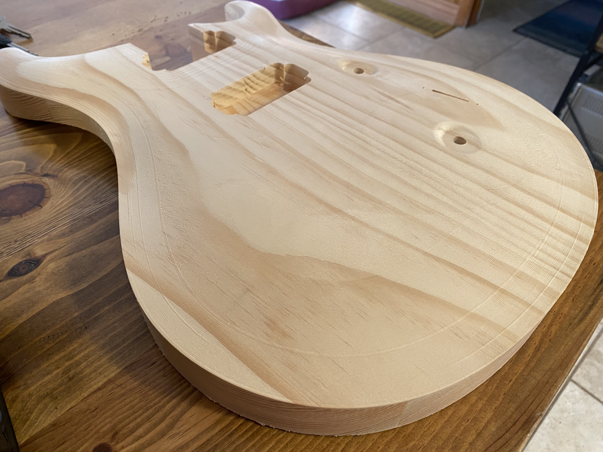
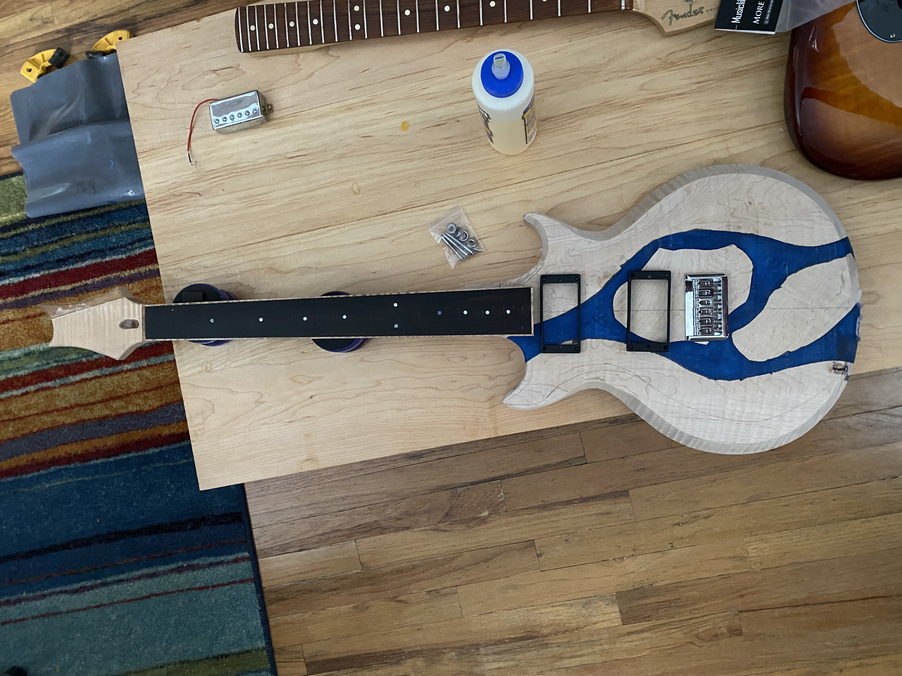
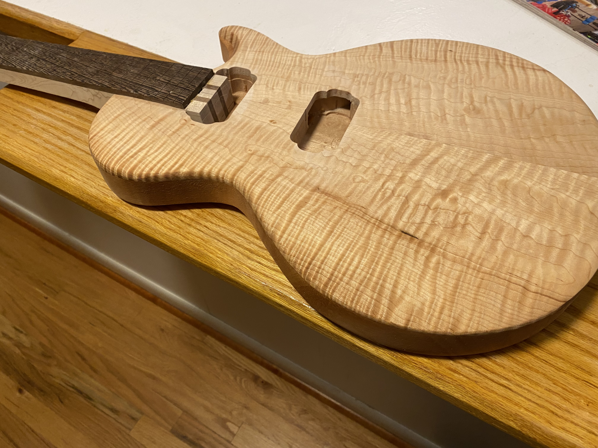
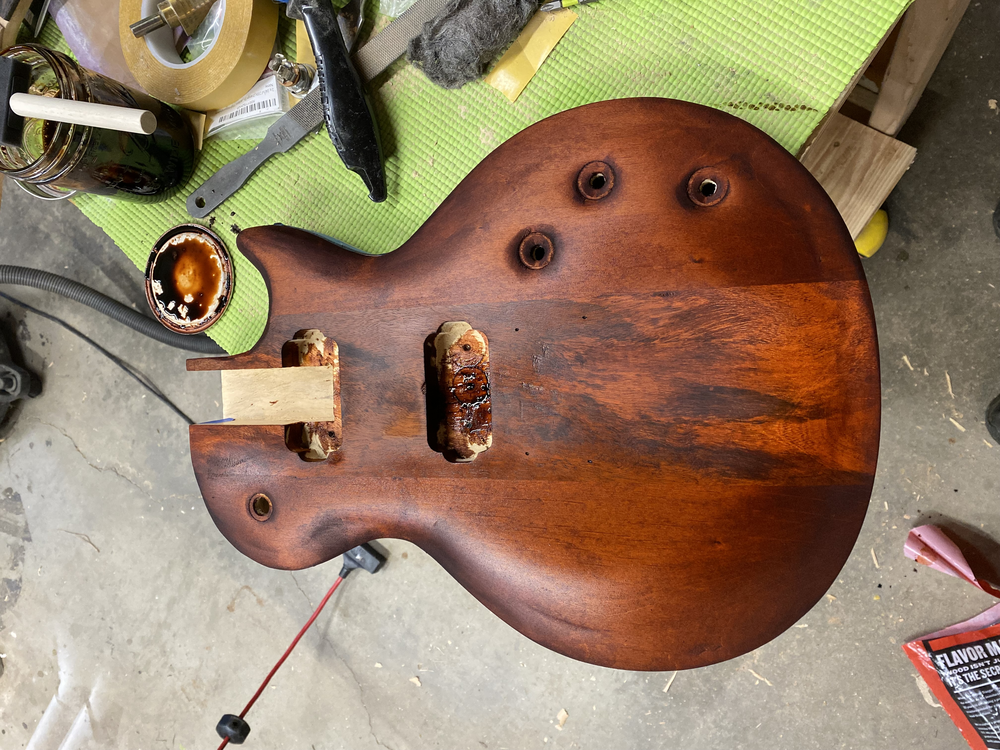

Building unique instruments with premium figured woods




Dorweiler Guitars grew out of a love for the intersection of woodworking and music. What started as a fascination with figured woods—the way light plays across flame maple, the organic patterns in spalted varieties—became a passion for the complete craft of guitar building.
Dorweiler Guitars isn't about competing with production instruments or mass manufacturers. The focus is on creating unique, one-off instruments that celebrate the natural beauty of premium woods. Each build is an opportunity to push further—whether that's carving epoxy resin channels, perfecting burst finishes, or sourcing the most dramatic figured tops I can find.
Every Dorweiler guitar teaches me something new. I'm constantly learning, experimenting with new techniques, and refining my process. The goal is simple: build instruments that players connect with—guitars that look stunning on the wall but are made to be played.
If you're interested in commissioning a build or just want to talk about figured woods and lutherie, reach out. I love connecting with other builders and players who share this passion.
Hand-selected figured woods including quilted maple, flame maple, spalted varieties, and exotic burls. Each piece chosen for its unique character and visual impact.
Inspired by modern boutique builders, each guitar is designed to be a visual statement piece while maintaining exceptional playability and tone.
Careful attention to detail in every aspect of construction, from neck carving to fretwork to final setup. Each instrument is built to professional standards.
No two guitars are exactly alike. The natural variation in figured woods ensures that each build is truly one-of-a-kind.
"Every piece of figured wood tells a story. My job is to let that story show through while building an instrument that feels right in your hands and sounds the way you hear it in your head."
— Jason Dorweiler
I typically take on 2-3 commission builds at a time. If you're interested in collaborating on a unique Dorweiler instrument, let's start a conversation.
Learn About Commissions